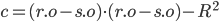

PATH TRACER
In this project we created a path tracer in order to render scenes in realistic lighting in a more efficient manner.
The first task was to do ray generation and allow the ray to interact with the scene. We transformed a position from image space in order to find the direction in world space, thus giving us our ray. Using this ray generator allowed us to sample pixels by casting the rays multiple times and finding the average radiance the rays accumulated based on where they intersect in the scene. Scene intersection was handled in two ways for triangles and spheres: Using the Moller Trumbore algorithm and the quadratic equation respectively
This, however, was slow, since it required checking every single primitive for an intersection. To remedy this, we created a bounding volume hierarchy, which partitioned primitives in boxes based on the median coordinate of the largest dimension of the parent box. By checking for the ray’s intersection with boxes before looking at primitives (where the final box will only contain a handful of), we’ve reduced the time complexity to log time, instead of linear time.
Next, we worked on direct light illumination. The first step was to calculate the diffuse BSDF, which was thankfully very simple as all the materials reflected light in all directions equally. To do zero-bounce checking, we just had to return if the intersection was at a light or not. For one bounce hemisphere illumination, we sample a random vector direction from the hit point, and then check the illumination of the resulting intersection, adding it to the total. Then we divide to get the average light. For importance sampling, we instead iterate over each light and then iterate again for the number of samples. Now the sample is provided by a built-in function, though we only add it to the total if the intersection check returns false, as that indicates we’re in shadow. Putting this together allowed us to do direct illumination
Next, we did indirect illumination. This required a recursive call, which would only occur if a Russian Roulette random coin flip let us and if our ray depth, that is how many bounces it took, did not exceed the max set parameter. We first get the value of the one bounce radiance before adding the recursive call to it to then give us at least one bounce radiance. This allowed us to do global illumination, in which light could reflect off of objects, such as the red color of a wall reflecting into a shadow.
This was very slow, so we implemented adaptive sampling. This would measure a convergence of a pixel, which is essentially how much noise has been eliminated. Some parts of an image reduce noise faster than others based on how many samples you take. By using adaptive sampling, we can stop once the pixel’s convergence meets an acceptable threshold (calculated using the variance and mean of the pixel’s illuminance), allowing us to cut down on unneeded sampling and still generating globally illuminated images
To generate a ray, we must first calculate its direction given an (x, y) position in image space. To do this, we must first calculate the bottom left corner and top right corner of the sensor. These can be calculated using the known hFov and vFov values. The bottom left corner is at and the top right corner is at . Knowing this, we can translate the given (x, y) position by multiplying it by the difference of the top right and bottom left positions, and then adding that to the bottom left position, treating it as an origin.
To get its direction, we then multiply the c2w rotation matrix by it, and then normalizing. This allows us to create our ray using the provided camera pos as its origin, and our calculated direction. Finally, we set the min_t and max_t to the near and far clipping planes respectively.
To raytrace a pixel of a given positions, we iterate over the number of samples to find the average radiance, offsetting each ray’s target position by a small amount and updating the sample buffer’s radiance at that position
To test for intersection of a sphere, we use the quadratic formula and set a, b, c to:

Where r.d is the ray’s direction, r.o is its origin, s.o is the sphere’s center, and R is the radius
After solving the quadratic formula, if the inside of the square root was negative, we missed the circle. If it was zero, then there was a single intersection. If it was positive, we set the smaller value to t1, and the larger to t2. If either of the latter two cases happen, we then check to see if it’s a valid intersection, which is if t1 falls in between the min_t and max_t of the provided ray. Finally, if all of that holds up, we can return true and update the intersection params.
To test for the intersection of a triangle, we used the Möller-Trumbore Algorithm and the provided parameters for the triangle and the ray to do fewer vector calculaltions. This not only gives us the t value for the intersection, but also the barycentric coordinates for the triangle intersection. If any of the barycentric coordinates were less than 0 or greater than 1, then the ray did not intersect the triangle. Once again, we check the min_t and max_t to make sure that an intersection is valid if it did pass the above conditions
Our BVH uses a median based splitting heuristic, that is to say we find the median coordinate of all the primitives and partition the left side to values below the median and the right side to those equal to or above it. The coordinate we choose is determined by the current box’s longest dimension length.
Our BVH construction begins by making a copy of the primitives vector so that we don’t lose it and get segfaults.
Now we can begin the recursive base case. If the size of the primitives vector is greater than the max leaf size, we continue, otherwise we just return the vector and it becomes a leaf in the hierarchy. Otherwise we start building the split point.
To do this, we create two new primitives vectors, l and r to represent the left and right sides of the tree, as well as defining the box’s extent in all 3 dimensions. We also create a vector of pairs containing a double (which will represent the largest dimension of a primitive) and the primitive itself. We determine which dimension of the box is largest, and then start pushing that dimension’s coordinate and primitive itself into the vector of pairs for all primitives. Due to the nature of pairs in C++, we can sort the resulting vector of pairs automatically by the first value of the pair (that being the coordinate), which allows us to easily split the vector in half to partition by the median. The left and right sides then both make the recursive calls on themselves, and we set the node’s left and right parameters to those outputs of the recursion.
Cow: 5856 primitives
Without BVH Accel: 12.0428s
BVH Accel: 0.0620s
Lucy: 133796 primitives
Without BVH Accel 342.9882s:
BVH Accel: 0.0669s
We can observe a massive speedup, and indeed, the BVH Acceleration changes the asymptotic runtime from to . Lucy was able to render 4900 times as fast! While constructing the BVH adds some overhead time due to sorting and iterating through the vectors, it’s a one and done thing, which saves a huge amount of time from not having to check every single primitive for every single ray. Once a ray enters a bounding box, it won’t have to check any box that’s in a different branch of the tree at lower levels. As a result, when checking the intersection for an array, we can skip and ignore the vast majority of primitives.
Doing some rough math shows that , which is over 25 thousand times as small as the original number of primitives. This is higher than the actual speedup of ~5 thousand, but being off by a factor of 5 of the expected runtime is very close, not even an order of magnitude.
The first algorithm we implemented was direct lighting with uniform hemisphere sampling. This works by uniformly sampling rays coming from a hemisphere and aggregating the incoming light that intersects at a specific point, called the hit point. To achieve this, we used a Monte Carlo estimator shown in lecture. Then, we calculate the amount of outgoing light that’s reflected.
The second algorithm we implemented was direct lighting with importance sampling which directly samples light rays from the different light sources. We check whether the sampled light ray intersects with the hit point, and then if so, can calculate the reflected amount of light at that point and update accordingly.
Here we can see a comparison between the two methods:
Hemisphere 1-1 | Importance 1-1 |
Hemisphere 64-32 | Importance 64-32 |
It’s clear that there is a lot more noise in the hemisphere sampling method compared to the importance sampling. Even with a low sampling rate, importance sampling manages to do pretty well in regards to noise, whereas the hemisphere sampling method, with 64 samples per ray, still has a fuzzy haze over the entire image. This is likely because with hemisphere sampling, we might end up sampling a ray that bounces off and never hits a light. This isn’t an issue with importance sampling because we directly sample the lights, and so the only visible noise is in the shadow of the bunny. Even then, the noise isn’t as prominent and mostly goes away with moderate sampling rates.
Below is a comparison showing the level of noise in the lighting given only 1 sample per pixel, with the number of light rays being the variable
1 Light Sample | 4 Light Samples |
16 Light Samples | 64 Light Samples |
And here’s a cleaner image with 64 samples, 32 lights
As we can see, the noise gets reduced as we introduce more rays, and the image gets brighter while the shadows become more defined. The shadow is barely visible in the l = 1 image.
The indirect lighting function works by computing the estimated light from multiple ray bounces and aggregating them together to get the average. This is achieved by calculating the one bounce radiance first and adding the aggregate radiance from all subsequent bounces. Note that we stop here if the max ray depth isn’t greater than 1. The recursion portion of the function is what calculates the radiance from the additional bounces, which keeps track of the depth of the newly generated ray and decrements it every time the ray bounces. We used a termination probability of 0.4 for our Russian Roulette method, which helps terminate the recursion probabilistically if the coinflip fails. Otherwise, we also have a base case that makes sure our current depth is greater than 1.
Global Illumination on a sphere
Global Illumination on a bunny
Direct vs Indirect Illumination:
Direct Illumination | Indirect Illumination |
Combined:
Changing max ray depth
1024 samples, max ray depth of 0 | 1024 samples, max ray depth of 1 |
1024 samples, max ray depth of 2 | 1024 samples, max ray depth of 3 |
1024 samples, max ray depth of 5 | 1024 samples, max ray depth of 100 |
Changing number of samples
1 Sample | 2 Samples |
4 Samples | 8 Samples |
16 Samples | 32 Samples |
64 Samples | 1024 Samples |
Adaptive Sampling works by calculating a pixel’s convergence metric during ray tracing. If the pixel has not converged, we continue sampling with the goal of reducing noise. If the pixel has converged, we can be confident that the noise has been reduced and can stop sampling. In this approach, Adaptive Sampling allows us to leverage a pixel’s convergence metric in order to focus the sampling process on portions of the image where pixels have lots of noise and thus require more sampling to mitigate.
To implement this, it was a simple addition to the ray generation function. We keep track of the mean and variance over the number of samples taken so far, both of which can be calculated by using the sum of the illuminance of the ray where
Knowing these, we can calculate the convergence value:
And test to see if
If it is, we break and set the sample buffer and sample count buffer to the calculated values so far. In order to prevent us from making this calculation every time we draw a sample, we have a sample batch size passed in, and so we only perform this check when our sample count is a multiple of the batch size. Doing this allows us to stop sampling when we’ve reduced noise, allowing us to generate a noiseless image like below, as well as seeing the sample rate, which is determined by the number of samples taken before breaking due to convergence (or not breaking, which is what red signifies)
In this case, blue means a low sample rate and red means a high one with green in between. We can see that the dark background converged immediately, but more complicated geometry, especially parts of the dragon that were in slight shadow, required the full amount of samples and did not converge.